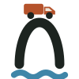

Camiones de basura GDL Conectando… · 0 camionesTotales (JSON) ↗ · Cada reporte (CSV) ↗ · qué contienen
Cuenta quién tocó «Abrir GuaZap» desde aquí, no el total de reportes al Ayuntamiento. Zonas de ~500 m; las que tienen menos de 5 reportes no se muestran.
Mapa en vivo, no oficial, de los camiones de basura de Guadalajara. Los datos vienen de una fuente pública que puede fallar o cambiar sin aviso.
Tu ubicación y el punto que elijas solo se usan en tu navegador; no se envían a ningún lado. Si reportas con la guía, contamos de forma anónima el tipo de falla y una zona de ~500 m (puedes desactivarlo en la ficha). Para saber cuánta gente usa el mapa, contamos visitas con Cloudflare Web Analytics, sin cookies ni datos personales. Cómo cuidamos tu privacidad.
¿No pasó el camión o hubo un problema? Usa «Repórtalo» (arriba) para enviarlo por GuaZap, el WhatsApp de reportes del Ayuntamiento.
Puedes agregar este mapa a la pantalla de inicio de tu celular desde el menú del navegador («Agregar a la pantalla principal» o «Instalar app»).